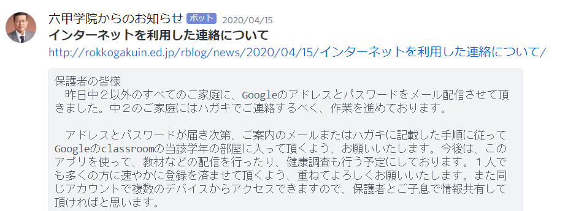
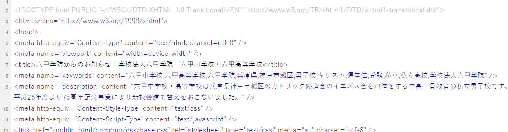

新型コロナウイルスの感染拡大によって、2020年3月から、全国の学校が休校となった。その不安定な毎日の中で学校からの連絡が増加し、かつ重要になった。六甲学院を含む多くの学校では、ホームページ上に学校からのお知らせが掲載されることが多いだろう。しかし、度々学校ホームページを確認するのは面倒だ。そこで、学校ホームページ上のお知らせの更新を検知し、通知を送りたいと思った。
作ったものはGoogle App Script1 （以下、”GAS”と表記）を使用して学校ホームページをスクレイピング2し、 もし更新されていた場合、私が普段使用しているチャットソフトDiscordに通知を送るというものだ。 この記事ではホームページの更新の検出のみを扱い、通知を送る部分については割愛する。 工夫次第で、スマートフォンにメールを送ったり、LINEに送ったりすることも可能だ。
ここでは、六甲学院のホームページを具体例として取り上げ、製作の過程やプログラムの仕組みを説明する。他のウェブページでも応用が可能だろう。 
ほとんどのウェブページはHTML（HyperText Markup Language）で書かれている。 HTMLは、ウェブページを作成するためのマークアップ言語である。 マークアップというのは、文書の各部分が果たす役割がわかるように目印をつけるという意味だ。 HTMLはコンピュータに理解できるように文書の構造を定義するための書き方だと言うこともできるだろう。 実際に使われているHTMLを見てみる。サンプルとして 六甲学院からのお知らせ のHTMLを取り上げる。ブラウザでアクセスして右クリックし、「ページのソースを表示」や「検証」をクリックするとこのような文字列が現れる。 
このように、HTMLタグと呼ばれる<>記号で囲まれたもので構造化された文書がウェブページを形作っている。
ウェブページが更新されたかどうかは、そのウェブページ（のHTML）を保存しておき、今のウェブページとの差分を調べるとわかる（RSSが提供されている場合はそれを使えば簡単かつ的確）。 また、通知を送るためにお知らせ記事のタイトルや内容をスクレイピングして取得したいと思った。 先ほどの、六甲学院からのお知らせページのHTMLを見てみると、各お知らせは<article>[記事の中身]</article>というarticleタグで囲まれていることがわかる。 ここから記事の情報を取得していく。 ちなみに六甲学院からのお知らせページの記事部分は以下のような構造だとわかった。
<article id="post-000" class="[細かい属性]">
<header class="entry-header">
<h2 class="entry-title">
<a href="[記事単体ページへのリンク]" rel="bookmark">[記事タイトル]</a>
<span class="meta-date">[記事が作成された日時]</span>
</h2>
</header>
<div class="entry-content">
[記事本文]
</div>
</article>
楽にHTMLの情報を取得するためにGASのParserというライブラリを使用した。 このライブラリは指定した文字列から文字列までを抜き出すという単純な働きをするものだ。 これを使用し、articleタグ内のタイトルや記事本文を抽出する。 HTMLから情報を抽出するために、このライブラリの他に正規表現3を用いたパターンマッチングも行った。 試行錯誤の結果、以下のようなコードになった（HTMLをパースしている箇所のみ抜粋）。
//ホームページのHTMLを取得
var content = UrlFetchApp.fetch(target_url).getContentText('utf-8');
var data = Parser.data(content).from('<h2 class="entry-title">').to('</h2>').build();
//記事タイトル取得
var title = Parser.data(data).from('rel="bookmark">').to('</a>').build();
//記事URL取得
var article_url = decodeURI(Parser.data(data).from('<a href="').to('" rel="bookmark">').build());
var article = Parser.data(content).from('<div class="entry-content">').to('</div>').build();
//pタグに囲まれた部分を配列として取得
var paragraph_list = Parser.data(article).from('<p>').to('</p>').iterate();
var article_txt = ''; //ここに記事の文字列を代入する
for (let i = 0; i < paragraph_list.length; i++) {
//改行を置き換え、一応他のタグを消す
paragraph_list[i] = paragraph_list[i].replace(/<br \/>/g, '\n');
paragraph_list[i] = paragraph_list[i].replace(/<\/.*?>/g, '');
paragraph_list[i] = paragraph_list[i].replace(/<.*?>/g, '');
//段落ごとに改行
article_txt += paragraph_list[i] + '\n';
}
HTMLから取得した情報をデータベースに保存し、更新を検知したい。データベースの代わりにGoogle Spread Sheet4を使いデータを保存する。具体的なソースコードは割愛する。
もし更新があった場合、Discordやメール、LINEなどに通知を送り、データベースを更新する。（「line bot」・「discord bot」などで検索すれば様々な情報が見つかる） GASにはトリガーという、作成したスクリプトをGoogleのサーバー上で定期実行できるとても便利な機能があるため、トリガーを設定し、10分毎くらいに実行されるよう設定する。 あまりに頻繁に実行すると相手（ここでは六甲学院ホームページ）のサーバーに負担がかかったり、そもそもGASの制限に引っかかったりする可能性があるので、注意する。
読んでいただきありがとうございました。 是非、実際に作ってみてください。ウェブページをクロールする際には著作権や利用規約に気を付けてください。
追伸：コロナウイルス関連の情報は特別に学校サイトの別の部分にまとめられてしまい、作ったプログラムは、あまり役に立たなかった。残念。
多くのサイトを参考にさせて頂いた。紙面の都合上、特に役に立ったサイト・本のみを掲載する。